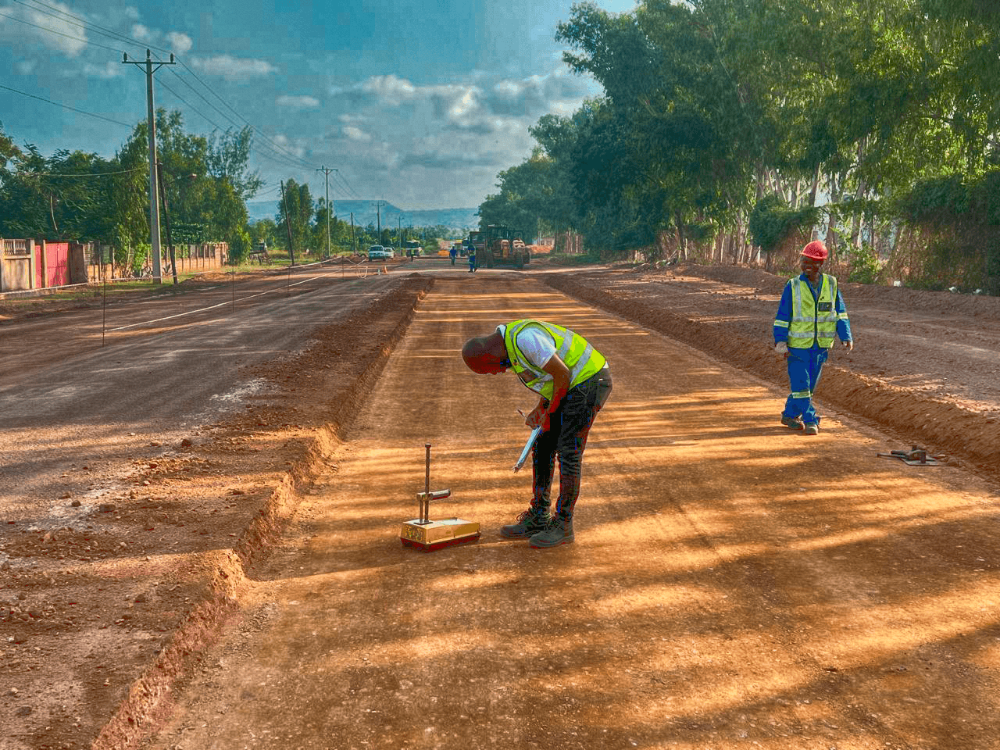
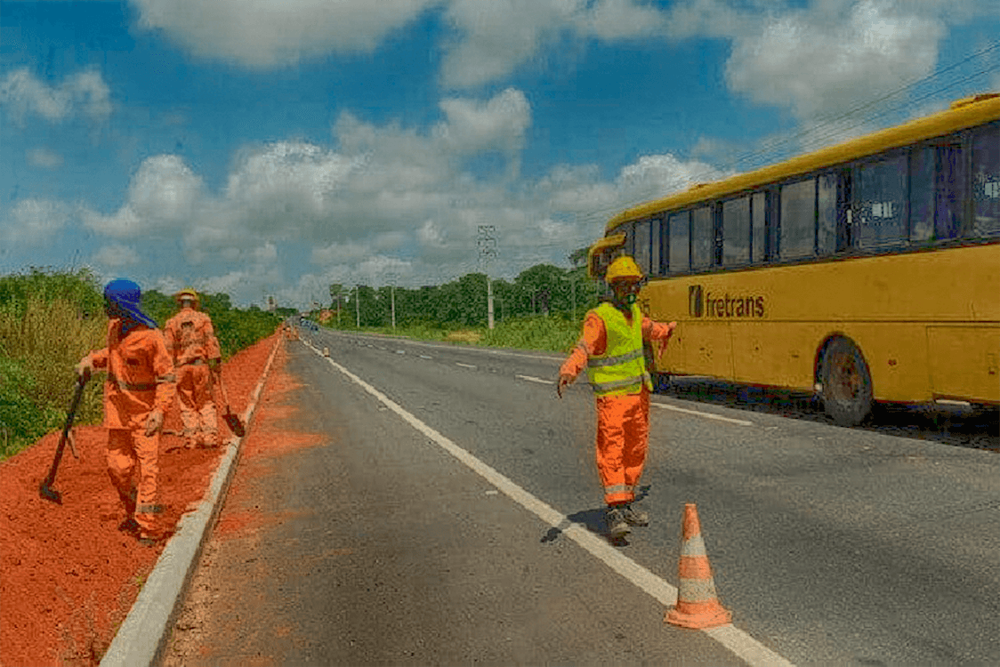
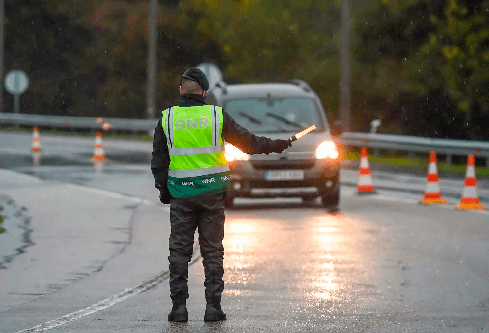
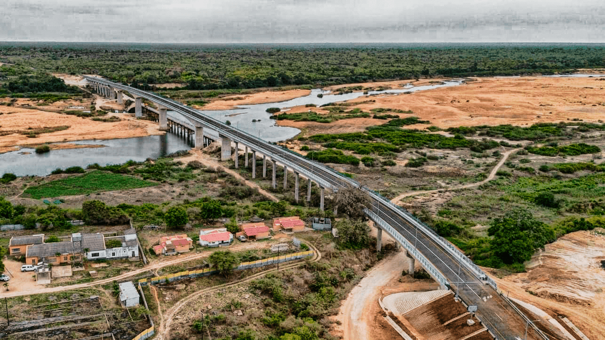

ANE Inicia Obras de Pavimentação na Estrada N6
Data: 12/10/2023 | Categoria: Projetos
A Administração Nacional de Estradas (ANE) deu início às obras de pavimentação de 50 km da Estrada N6, que liga a cidade de Vanduzi ao distrito de Gorongosa. A previsão é que as obras sejam concluídas em 12 meses.
Leia mais

Novo Sistema de Transparência é Lançado pela ANE
Data: 11/10/2023 | Categoria: Transparência
A ANE lançou um novo portal de transparência, onde os cidadãos podem acompanhar em tempo real os gastos e investimentos em infraestrutura rodoviária. A iniciativa visa aumentar a confiança pública.
Leia mais

Campanha de Segurança Rodoviária Atinge Mais de 10.000 Pessoas
Data: 07/10/2023 | Categoria: Notícias
A ANE, em parceria com a Polícia de Trânsito, realizou uma campanha de segurança rodoviária que alcançou mais de 10.000 pessoas em todo o país. A iniciativa incluiu palestras, distribuição de materiais educativos e simulações de primeiros socorros.
Leia mais

Nova Ponte sobre o Rio Save é Planejada para 2024
Data: 05/10/2023 | Categoria: Projetos
A ANE anunciou os planos para a construção de uma nova ponte sobre o Rio Save, que facilitará o transporte entre as províncias de Sofala e Inhambane. O projeto está orçado em 50 milhões de dólares e deve começar no primeiro trimestre de 2024.
Leia mais